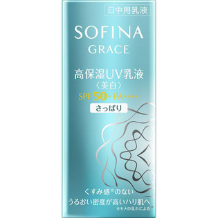

返回列表
产品名称：ソフィーナグレイス 高保湿UV乳液美白 SPF50+PA++++さっぱり

花王 ソフィーナグレイス 高保湿UV乳液美白 SPF50+PA++++さっぱり ３０ＭＬ（医薬部外品）
メーカー 花王
JANコード 4901301325631
商品の特徴
朝のみ使用で約３ヶ月分
- 成分・分量
- カモミラET＊、酢酸DL-α-トコフェロール＊、ジメチコン、シクロジメチコン、低温焼成酸化Zn、水、グリセリン、パラメトキシケイ皮酸オクチル、エタノール、無水エタノール、シリコン被覆酸化亜鉛（S）、酸化Zn、シリコン被覆タルク、ジカプリン酸ネオペンチルグリコール、2-［4-（ジエチルアミノ）-2-ヒドロキシベンゾイル］安息香酸ヘキシルエステル、BG、メタクリル酸ラウリル・ジメタクリル酸グリコール共重合体、N-プロピオニルポリエチレンイミン・メチルポリシロキサン共重合体、酸化Al水和物・ケイ酸処理酸化Ti、アスナロ抽出液、ローズマリーエキス、ヘキサデシロキシPGヒドロキシエチルヘキサデカナミド、チューベロースポリサッカライド液、水溶性ショウキョウエキス（K）、ユーカリエキス、イソステアリン酸コレステリル、スクワラン、微粒子酸化Ti、メチルシロキサン網状重合体、メチルハイドロジェンポリシロキサン、POE・ジメチコン共重合体、ビタミンE、水酸化Al、含水ケイ酸、香料＊は「有効成分」無表示は「その他の成分」
- 用法及び用量
- ＜使用方法＞
よく振って適量（直径2cmの円に広がるくらい）を顔全体になじませます。